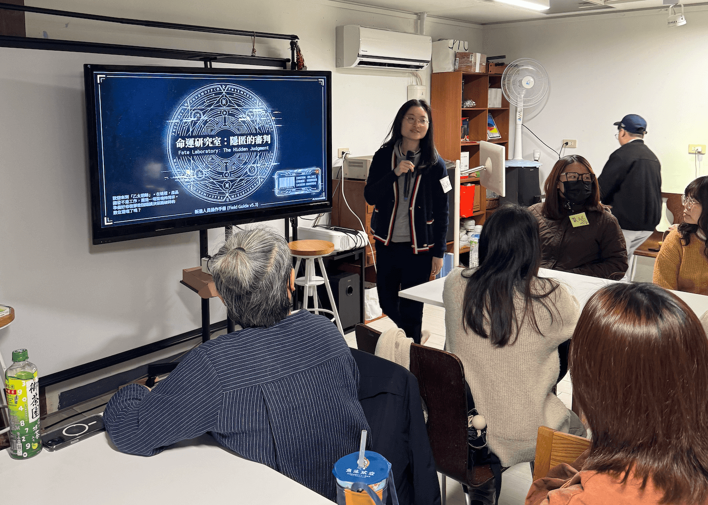
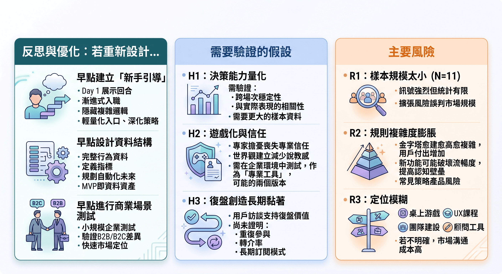

數據驅動產品決策工作坊
PM × UI × UX × RD 跨職能遊戲化決策模擬系統設計與驗證
實測顯示 80% 願持續參與、滿意度 8–10 分，驗證決策模擬作為訓練工具的可行性


▶ 問題定義
市場現況
近年 UX 學習市場供給充足，多數課程聚焦於工具操作與流程方法，協助學習者建立基礎能力。然而，在實際產品開發環境中，真正影響產品成敗的往往不是流程熟練度，而是決策品質。
產品開發通常伴隨資訊不對稱、時間壓力與角色立場差異，但這類情境在多數學習場域中較少被高擬真模擬。
使用者痛點
透過市場觀察與使用者訪談，我們歸納出三項核心痛點：
1. 缺乏跨職能決策經驗：多數設計師較少在學習場域中練習與 PM、工程等角色進行真實取捨與協作。
2. 理論學習難以遷移到實務：學習者希望更貼近真實專案節奏，而非單向知識吸收。
3. 需要明確的能力回饋與成長證據：訪談與問卷顯示，學習者高度重視復盤與成長可視化，希望理解自己的決策盲點與改進方向。
現有學習方案的邊界與延伸可能
現行課程多以內容傳遞為核心交付形式，較難同時滿足：
• 在有限時間內創造真實決策張力
• 提供低門檻但高投入感的學習體驗
• 將討論過程轉化為可分析、可追溯的能力證據
當決策情境缺乏壓力與資訊落差，學習效果往往停留在理解層面，而非行為層面。
重新定義問題
基於上述觀察，我們將問題重新定義為：
能否設計一套低門檻、可重複模擬的跨職能決策練習機制，並在每次決策後，透過結構化復盤將行為轉化為可分析、可驗證的能力證據？
• 以遊戲化機制降低學習摩擦與提升參與動機
• 透過資訊不對稱與角色分工重建真實決策張力
• 導入行為數據與 AI 復盤，讓學習結果具體可見
▶ 研究與驗證策略
研究方法
採用「假設驅動 × 多階段驗證」策略，而非一次性設計。研究流程包含：
1. 市場與競品分析：使用 AI 工具進行市場缺口與競品定位分析，確認決策責任與跨職能張力為潛在地帶。
2. 專家訪談：驗證產業對決策能力的期待與能力斷層現象。
3. 使用者深度訪談：理解學習痛點、參與動機、付費可能、偏好取向與對理論課程的優化建議。
4. 價值驗證：測試核心概念是否具吸引力與實際需求。
5. 原型測試：測試遊戲化方向是否足以產生投入與張力。
6. MVP 實測：驗證完整機制的學習效果、參與體驗與付費意願。
受訪結構
為確保情境真實性與跨職能張力，研究對象涵蓋：UI / UX 設計師、PM、RD、DA。
MVP 參與者亦維持跨職能比例，以模擬真實產品開發環境中的資訊不對稱與立場差異，確保：不僅是單一角色視角，也能重現跨角色決策動態。
為何這樣設計驗證路徑？
驗證邏輯不是驗證「遊戲好不好玩」，而是驗證三個核心假設：
1.跨職能角色衝突是否能創造真實決策張力
2.遊戲化是否能降低學習門檻並提升投入度
3.行為復盤是否能轉化為能力證據
因此我們採用「由小到大」的驗證節奏：先驗證需求（訪談）、再驗證概念（價值驗證）、再驗證機制（原型測試）、最後驗證完整體驗與數據結果（MVP）。
這樣的分段設計，可以：降低錯誤投入成本、在早期推翻不適合的遊戲化方向、逐步逼近最終可行模型。例如，在早期原型階段，我們曾測試多種遊戲化機制，但因缺乏張力或造成心理摩擦而淘汰；最終選擇以對抗式陣營與資訊不對稱作為結構骨架，兼顧衝突與心理安全。
▶ 關鍵洞察

洞察共同導向三個設計原則：創造決策張力、產出能力證據、控制門檻與心理安全，這使遊戲化成為策略選擇，而不是創意包裝。
▶ 設計決策與系統架構

四個設計原則：
1. 張力優先：沒有壓力就沒有決策行為。
2. 真實性優先：以資訊不對稱重建真實職場環境。
3. 低門檻參與：遊戲化作為學習介面，而非娛樂元素。
4. 證據導向：體驗必須轉化為可視化成長與復盤資料。
▶ 原型迭代與 MVP 驗證


原型測試驗證到什麼？
1. 規則複雜度過高（關鍵問題）：多數非桌遊玩家無法理解正反派如何操作才算贏、規則記憶成本過高、容易在第一回合就失去投入感，所以策略可以複雜，但規則必須簡單。
2. 玩家真正重視的是復盤：在價值驗證與原型訪談中出現「我的盲點在哪」、「這決策邏輯是否合理」，所以遊戲不是核心，復盤才是產品的靈魂。（訪談已明確指出復盤為高度期待項目）。
3. 時間設計影響沉浸度：使用者明確偏好單局 10–20 分鐘、三回合內完成、不能被綁超過 30 分鐘，所以 MVP 改為：20 分鐘 × 3 回合結構、資訊卡牌化、降低長文閱讀。
4. 需要即時引導：玩家卡關時不知道怎麼發言、討論易發散、強勢角色易壓制場面，所以加入卡牌話術提示、主持人引導機制、行為標記系統。
▶ 成果與數據


在 11 人 MVP 測試中，我們驗證這不只是一次工作坊，而是一個可量化決策能力的系統雛型。
創造高壓決策模擬能創造真實認知衝擊、復盤機制是學習價值核心，以及使用者具有實際支付意願。
▶ 商業化與擴展潛力

這是一個可持續更新場景、可累積決策數據、並能延伸至企業訓練市場的行為模擬系統。
▶ 反思與優化
本專案目前仍是一個驗證階段的決策模擬系統。真正的挑戰不在於設計一場好玩的體驗，而在於證明決策行為可以被穩定測量，並對真實職場產生可預測影響。
若重新設計，會怎麼做？
1. 更早建立「新手引導機制」：會從 Day 1 就設計一回合示範局、設計 Progressive Onboarding（功能逐步解鎖）、把複雜度隱藏在系統，而不是放在規則文字 → 所以策略可以深，但入口必須輕。
2. 從一開始就設計數據結構（目前行為紀錄仍有人工標記成分）：會優先設計完整的行為資料結構，明確定義每個指標的計算邏輯和預先規劃未來自動化版本 → 讓 MVP 就具備資料資產視角。
3. 更早測試商業場景差異（目前測試族群偏向學習者 B2C ）：會同時做小規模企業內測，驗證 B2B 與 B2C 的需求差異，以及早確認市場定位。
哪些假設仍需驗證？
• 假設一：決策能力可以被穩定量化：目前透過發言頻率、投票結果、說服成功率、推估決策傾向，但仍需驗證是否具有跨場次穩定性，與是否能與真實職場表現產生關聯 → 所以需要更大樣本數據。
• 假設二：遊戲化不會削弱專業信任感：專家曾提到企業案例過度遊戲化可能削弱理性信任，目前也透過世界觀建立減少說教感，但仍需驗證在企業環境中是否仍被視為專業工具，以及是否需要雙版本（學習版 / 企業版）。
• 假設三：復盤足以創造長期黏著：訪談結果高度支持復盤價值，但尚未驗證使用者是否會重複參與，是否會推薦給同事，與是否能形成長期訂閱模式。
最大風險
• 風險一：樣本規模過小（目前 MVP 為 11 人）：雖有強烈訊號，但統計可信度仍有限，若直接擴張，可能誤判市場規模。
• 風險二：規則複雜度再次膨脹：每新增一個功能，都可能提高認知門檻和破壞流暢度，這是策略型產品常見風險。
• 風險三：定位模糊：這個系統可能被理解為：桌遊、UX 課程、團建活動、顧問工具，若定位不清，市場溝通成本會很高。

▶ 技術/能力

從 UX 到能設計決策能力系統的產品思考者，我不僅關注使用者體驗，更關注行為如何被結構化、量化與驗證。
從市場問題轉為可驗證假設
使用的方法：
• 雙鑽石模型（Discover → Define → Develop → Deliver）
• 第一性原理拆解問題
• 訪談歸納 → 可驗證假設設計
• 價值驗證 → 原型測試 → MVP 實測
技術思維：
• 問題拆解為「可觀察行為」
• 將抽象能力轉為「行為指標」
導入 AI 與 RAG，並建立行為復盤系統
• 系統一 / 系統二（決策心理模型）
• 資訊不對稱設計（情境建構）
• Scaffolding（認知負荷控制）
• Time-boxed 行為實驗
• A/B 原型迭代
• MECE 框架